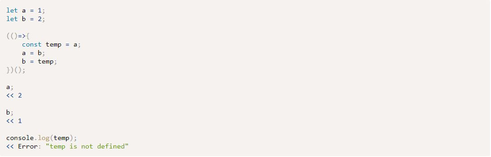

Week 07 Notes
Reading Ch11: Further Functions
Properties and Methods
- length property will return number of parameters
- call() function can set the value of 'this'
Custom Properties
- you can add custom properties in the same way as built in properties.
- Provides result caching or MEMOIZATION
- you can save a return value result in a cache property, and the access the cache instead on computing function again.
- Use for expensive computational operations
Immediately Invoked Function Expression
- acronymn IIFE - pronounced 'iffy'
- pair of parentheses is placed at the end of the function definition
- useful to keep variables wrapped in the scope of the function
- temporary variable example with IIFE

- recommended way to use strict mode is in an IIFE
Recursive Functions
- function that will invoke itself until a condition is met
- useful with iterative processes
Callback Functions & Event-driven Asynch Programming
- JavaScript is single thread, but...
- the event loop lets a program continue to run while wating for another task.